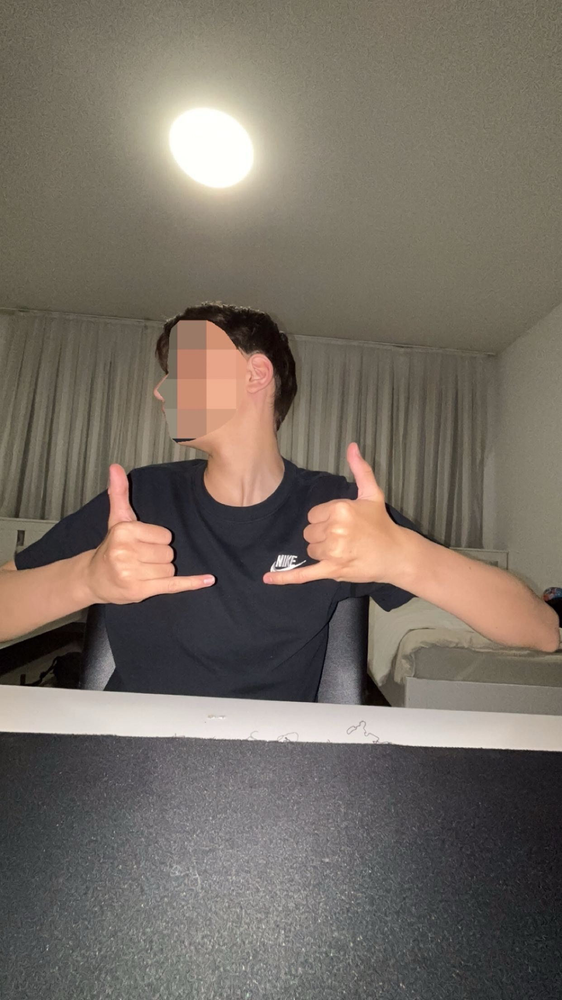
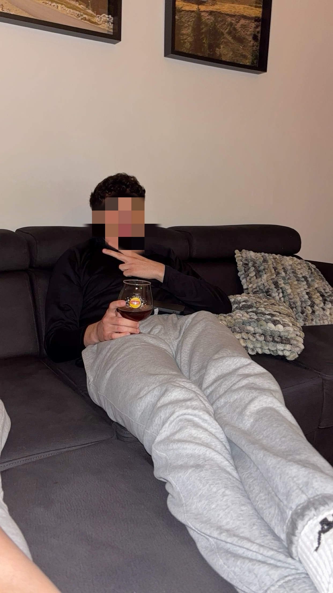
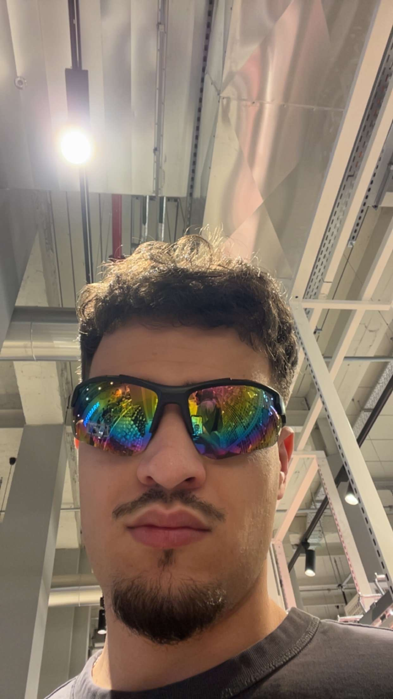
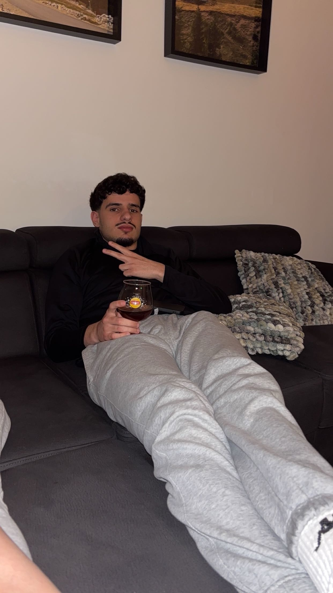

😅
Slachtoffer — Altin Fransman
Altin Fransman is het officiële slachtoffer. Hij kreeg ooit de opdracht om een “Akomorad” te halen, terwijl dat woord eigenlijk niet bestond. Sindsdien is hij een vaste mascotte binnen de groepsgrap.
Elke persoon heeft binnen Akomorad een eigen rol, energie en betekenis. Hieronder zie je de leden in een vaste, professionele stijl.
Altin Fransman is het officiële slachtoffer. Hij kreeg ooit de opdracht om een “Akomorad” te halen, terwijl dat woord eigenlijk niet bestond. Sindsdien is hij een vaste mascotte binnen de groepsgrap.
De man met stijl en stuurvermogen. Hij rijdt overal naartoe, kent shortcuts en brengt kalmte, snelheid en een eigen vibe binnen de groep.

Regelt de formele kant van alles. Papierwerk, afspraken, organisatie en structuur: hij is de man achter de schermen die ervoor zorgt dat alles blijft draaien.
De toekomstige profvoetballer. Brengt sport, humor en snelheid in de groep. Bekend om zijn energie en aanwezigheid.

De bedenker van “Akomorad”. Als iemand iets geks, geniaals of onvergetelijks bedenkt, is de kans groot dat het van hem komt.

Het ankerpunt van de groep. Hij bewaart overzicht, houdt mensen betrokken en zorgt dat de balans binnen Akomorad blijft bestaan.
Strategisch, kalm en doortastend. Hij denkt vooruit, analyseert situaties scherp en zorgt dat er altijd een plan klaarstaat.

Begeleidt en motiveert iedereen persoonlijk. Hij helpt de groep beter te worden en haalt het beste uit de anderen naar boven.